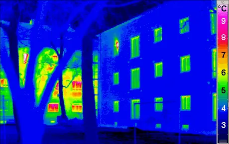

Themes › Theme B The particulate nature of matter
B.1Thermal energy transfers
Why does a metal bench feel colder than a wooden one on the same morning? How long does a kettle take to boil, and how can we measure the temperature of the Sun without going there? This topic builds a particle model of matter, links temperature to the motion of particles, and explains the three ways thermal energy moves: conduction, convection and radiation. There is no additional HL content in B.1.
Knowledge and science
Nature of science
Models. Nobody can see individual molecules move, yet a simple model of tiny particles that attract each other and jiggle about explains density, melting, boiling, conduction and pressure. A good model links what we can observe (the macroscopic) to what we can't (the microscopic).
Evidence. In the 1700s, many scientists thought heat was an invisible fluid called "caloric". In 1798 Count Rumford noticed that boring a cannon barrel produced heat endlessly, as long as the drilling went on. A fluid would eventually run out, so the evidence pointed to heat being energy transferred by motion.
Measurement. Temperature scales were first fixed to the melting and boiling points of water. Since 2019 the kelvin has been defined by fixing the value of the Boltzmann constant $k_B$, which ties temperature directly to the energy of particles.
Shared endeavour. Black-body radiation puzzled physicists across Europe for decades. Careful measurements in Germany and theory from many countries finally led Max Planck to the quantum idea in 1900 (E.2).
ToK: questions to think about
- Can we trust our senses? A metal bench and a wooden bench at the same temperature feel different to touch, because metal conducts energy away from your hand faster. What does this suggest about using sense perception as evidence?
- Can a wrong model still be useful? The caloric theory correctly predicted the results of many mixing experiments. If a model gives the right answers, does it matter whether it's true?
- How can we know about things we can never visit? We find the surface temperature of a star from the colour of its light alone. How certain can knowledge be when it comes from such indirect measurement?
- Does everyday language get in the way? People say "close the door, you're letting the cold in" and "heat rises". Physics says neither. How does the language we grow up with shape what we find easy to understand?
1. The molecular model of solids, liquids and gases
All matter is made of tiny particles (atoms or molecules) that are always moving. Neighbouring particles attract each other when they are a little apart and repel strongly if pushed too close. How strongly they are held together decides whether a substance is a solid, a liquid or a gas.
- Solid: particles in a regular, fixed pattern (a lattice), held in place by strong forces. They vibrate about fixed positions. A solid has a fixed shape and a fixed volume, and a high density.
- Liquid: particles still close together, but jumbled. The forces are weaker, so the particles vibrate and slide past each other. A liquid takes the shape of its container but has a fixed volume. Its density is high, usually a little less than the solid's (water is an unusual exception: ice floats).
- Gas: particles far apart, moving fast in straight lines between collisions, with almost no forces between them except during collisions. A gas fills its whole container and has a very low density.
Gases are easy to compress because there is so much empty space between the particles. Solids and liquids hardly compress at all, because the particles are already touching.
Linking question What role does the molecular model play in understanding other areas of physics? NoS B.3 The kinetic model of an ideal gas → · B.5 Resistance and resistivity →
Linking question How has international collaboration helped to develop the understanding of the nature of matter? NoS
2. Density
$\rho$ (rho) is the density in $\text{kg m}^{-3}$, $m$ is the mass in kg and $V$ is the volume in $\text{m}^3$.
Density tells you how much mass is packed into each cubic metre. Watch the units: $1\ \text{g cm}^{-3} = 1000\ \text{kg m}^{-3}$, and $1\ \text{cm}^3 = 10^{-6}\ \text{m}^3$.
Worked example: how far apart are the molecules in steam?
Water has a density of 1000 $\text{kg m}^{-3}$. Steam at 100 °C and normal air pressure has a density of 0.60 $\text{kg m}^{-3}$. (a) What volume does 1.0 kg of each occupy? (b) Roughly how many times further apart are the molecules in steam?
(a) $V = \dfrac{m}{\rho}$. Water: $V = \dfrac{1.0}{1000} = 1.0 \times 10^{-3}\ \text{m}^3$ (1 litre). Steam: $V = \dfrac{1.0}{0.60} = 1.7\ \text{m}^3$.
(b) The steam takes up about $\dfrac{1.7}{1.0 \times 10^{-3}} \approx 1700$ times the volume. Volume depends on (spacing)³, so the spacing increases by about $\sqrt[3]{1700} \approx 12$ times.
So in steam the molecules are, on average, about 12 molecule-widths apart. That's why gases are so easy to compress.
3. Temperature and the kelvin scale
Two temperature scales are used in physics:
- The Celsius scale ($\theta$, in °C) was built from two fixed points: water freezes at 0 °C and boils at 100 °C (at normal air pressure).
- The kelvin scale ($T$, in K) is the absolute scale. Its zero, absolute zero (0 K), is the lowest temperature possible. It's the scale that physics equations use.
One kelvin is the same size as one degree Celsius, so a temperature change is the same on both scales: a rise of 15 °C is a rise of 15 K.
We write "300 K", not "300 °K". Absolute zero is −273 °C (more precisely −273.15 °C).
Where does absolute zero come from?
Heat a fixed amount of gas in a sealed, rigid container and its pressure rises in a straight line. Repeat with different amounts of gas and you get lines with different gradients. Extend the lines backwards and they all reach zero pressure at the same temperature: about −273 °C. The gas particles would have stopped moving altogether, so nothing can be colder.
Temperature and particle energy
The kelvin temperature of a substance measures the average random kinetic energy of its particles:
$\overline{E}_k$ is the average kinetic energy of one particle in J, $T$ is the temperature in K, and $k_B = 1.38 \times 10^{-23}\ \text{J K}^{-1}$ is the Boltzmann constant.
This only works with kelvin. Doubling the temperature from 300 K to 600 K doubles the average kinetic energy. "Doubling" 20 °C to 40 °C does not (it is 293 K to 313 K, only a 7% increase).
Worked example: molecules in a room
Find the average kinetic energy of a molecule in air at 27 °C. At what temperature would the average kinetic energy be twice as large?
Convert first: $T = 27 + 273 = 300$ K.
$\overline{E}_k = \tfrac{3}{2} \times 1.38 \times 10^{-23} \times 300 = 6.2 \times 10^{-21}$ J.
$\overline{E}_k \propto T$, so twice the energy needs twice the kelvin temperature: 600 K, which is 327 °C (not 54 °C).
4. Internal energy and thermal equilibrium
The particles of a substance have two kinds of energy:
- random kinetic energy, from their vibrating, sliding or flying about;
- intermolecular potential energy, from the forces between them. Pulling attracting particles apart increases their potential energy, like lifting a mass against gravity.
- When the temperature of a substance rises, the average kinetic energy of its particles increases.
- When a substance changes phase (melts or boils), the particles move further apart and their potential energy increases, while the temperature stays the same.
Temperature and internal energy are different things. A bath of warm water has far more internal energy than a cup of boiling water, because it has so many more particles, even though its temperature is lower.
Which way does thermal energy flow?
When two objects are in thermal contact, there is a net transfer of thermal energy from the object at the higher temperature to the one at the lower temperature. It doesn't matter which object has more internal energy: the hot cup of tea transfers energy to the much larger (but cooler) room. The transfer stops when both reach the same temperature. They are then in thermal equilibrium.
In physics, "heat" (or "thermal energy transfer", $Q$) means energy transferred because of a temperature difference. An object contains internal energy; it doesn't contain "heat". And cold doesn't flow in: when you open a door in winter, energy flows out.
Linking question How is the understanding of systems applied to other areas of physics? B.4 Systems and the sign convention (HL) → · B.2 Energy balance →
5. Specific heat capacity
Some materials need much more energy than others to warm up. The specific heat capacity $c$ is the energy needed to raise the temperature of 1 kg of a substance by 1 K.
$Q$ is the energy transferred in J, $m$ the mass in kg, $c$ the specific heat capacity in $\text{J kg}^{-1}\,\text{K}^{-1}$, and $\Delta T$ the temperature change (in K or °C, which is the same).
| Substance | $c$ / $\text{J kg}^{-1}\,\text{K}^{-1}$ |
|---|---|
| water | 4200 |
| ice | 2100 |
| aluminium | 900 |
| iron | 450 |
| copper | 390 |
Water's very high value means that seas warm up and cool down slowly, so coastal places have milder climates, and hot-water bottles and radiators store a lot of energy. Values are given in exam questions when you need them.
Worked example: boiling a kettle
A 2.0 kW kettle holds 1.2 kg of water at 20 °C. Estimate the time it takes to bring the water to the boil. ($c$ of water = 4200 $\text{J kg}^{-1}\,\text{K}^{-1}$.)
$Q = mc\Delta T = 1.2 \times 4200 \times (100 - 20) = 4.0 \times 10^5$ J.
Power is energy per second, so $t = \dfrac{Q}{P} = \dfrac{4.03 \times 10^5}{2000} = 200$ s, about 3.4 minutes.
This is a minimum: in reality some energy also warms the kettle itself and escapes to the room, so it takes a little longer.
Worked example: mixing (the method of mixtures)
A 0.20 kg copper block at 95 °C is dropped into 0.30 kg of water at 20 °C in an insulated cup. Find the final temperature. ($c$ of copper = 390, $c$ of water = 4200 $\text{J kg}^{-1}\,\text{K}^{-1}$.)
Energy lost by the copper = energy gained by the water (no losses). Call the final temperature $T$:
$0.20 \times 390 \times (95 - T) = 0.30 \times 4200 \times (T - 20)$
$78(95 - T) = 1260(T - 20)$
$7410 + 25\,200 = 1260T + 78T$, so $T = \dfrac{32\,610}{1338} = 24$ °C.
The water barely warms up. It has more mass and a specific heat capacity about 11 times bigger than copper's.
In the lab: to measure $c$, heat a known mass with an electric heater for a measured time. The energy supplied is $Q = Pt$ (or $Q = VIt$), and $c = \dfrac{Q}{m\Delta T}$. Some energy is always lost to the surroundings, so the result usually comes out too high. Insulating the block reduces this error.
Linking question How can observations of one physical quantity allow for the determination of another? NoS Skills: Reading a graph →
6. Phase changes and latent heat
Heat a block of ice steadily from −10 °C until it has all become steam, and record the temperature. The graph has slopes and flat sections:
During a phase change, the energy supplied doesn't speed the particles up. Instead it does work against the attractive forces between them, breaking the bonds that hold the solid lattice together (melting), or pulling the particles completely apart (boiling). Their potential energy increases while their average kinetic energy, and so the temperature, stays the same. Boiling takes much longer than melting, because separating particles completely needs far more energy than loosening them.
$L$ is the specific latent heat in $\text{J kg}^{-1}$: the energy needed to change the phase of 1 kg of a substance with no change in temperature. The specific latent heat of fusion $L_f$ is for melting (or freezing), and the specific latent heat of vaporization $L_v$ is for boiling (or condensing).
The same amount of energy is released when the change goes the other way, during freezing or condensing. For water, $L_f = 3.34 \times 10^5\ \text{J kg}^{-1}$ and $L_v = 2.26 \times 10^6\ \text{J kg}^{-1}$. That's why steam at 100 °C scalds far worse than water at 100 °C: it releases its latent heat as it condenses on your skin.
The names to know: melting (solid → liquid), freezing (liquid → solid), boiling or vaporization (liquid → gas), condensing (gas → liquid).
Worked example: from ice to steam
How much energy is needed to turn 0.50 kg of ice at −10 °C into steam at 100 °C? Use $c_\text{ice} = 2100$ and $c_\text{water} = 4200\ \text{J kg}^{-1}\,\text{K}^{-1}$, and the latent heats above.
Work through it one stage at a time, following the graph:
- Warm the ice to 0 °C: $\;0.50 \times 2100 \times 10 = 1.05 \times 10^4$ J
- Melt the ice: $\;0.50 \times 3.34 \times 10^5 = 1.67 \times 10^5$ J
- Warm the water to 100 °C: $\;0.50 \times 4200 \times 100 = 2.10 \times 10^5$ J
- Boil the water: $\;0.50 \times 2.26 \times 10^6 = 1.13 \times 10^6$ J
Total: $Q = 1.5 \times 10^6$ J. Boiling alone takes about three-quarters of it.
Evaporation
Evaporation is also a change from liquid to gas, but it is different from boiling:
- It happens at any temperature, but only at the surface of the liquid. Boiling happens at one temperature (the boiling point), with bubbles forming throughout the liquid.
- The particles in a liquid have a range of speeds. Only the fastest ones near the surface have enough energy to escape. They leave behind particles with a lower average kinetic energy, so evaporation cools the liquid. That's how sweating cools you down.
- It is faster when the liquid is warmer, has a larger surface area, or has air moving across it.
Phase changes matter on a huge scale too. Most of the world's electricity comes from power stations that boil water to make high-pressure steam, which spins turbines. The steam is then condensed back into water and reused.
Linking question How can the phase change of water be used in the process of electricity generation? E.4 Inside a nuclear power station →
7. Conduction
Thermal energy moves in three main ways: conduction, convection and thermal radiation.
Conduction is the transfer of energy through a material without the material itself moving. At the hot end, particles vibrate with more kinetic energy. They collide with their slower neighbours and pass on some of that kinetic energy, which in turn pass it on, and so on down the temperature difference. In metals, free electrons move through the whole material and carry energy quickly, so metals are the best conductors. Gases are very poor conductors, because their particles are so far apart. That's why trapped air (in wool, feathers, foam and double glazing) is such a good insulator.
The rate of energy transfer by conduction is bigger when the area is larger, the slab is thinner, the temperature difference is bigger, and the material is a better conductor:
$\dfrac{\Delta Q}{\Delta t}$ is the rate of energy transfer (power) in W, $k$ is the thermal conductivity of the material in $\text{W m}^{-1}\,\text{K}^{-1}$, $A$ is the cross-sectional area in $\text{m}^2$, and $\dfrac{\Delta T}{\Delta x}$ is the temperature gradient in $\text{K m}^{-1}$. The minus sign shows that energy flows down the temperature gradient, from hot to cold. In calculations, just use the size of $\Delta T$.
| Material | $k$ / $\text{W m}^{-1}\,\text{K}^{-1}$ |
|---|---|
| copper | 400 |
| aluminium | 240 |
| glass | 0.80 |
| brick | 0.6 |
| wood | 0.15 |
| polystyrene foam | 0.03 |
| still air | 0.025 |
Worked example: a window in winter
A single pane of glass has an area of 1.5 $\text{m}^2$ and a thickness of 4.0 mm. Its inside surface is at 12 °C and its outside surface at 2 °C. Find the rate of energy loss through the glass. ($k$ for glass = 0.80 $\text{W m}^{-1}\,\text{K}^{-1}$.)
$\Delta T = 10$ K and $\Delta x = 4.0 \times 10^{-3}$ m, so
$\dfrac{\Delta Q}{\Delta t} = kA\dfrac{\Delta T}{\Delta x} = 0.80 \times 1.5 \times \dfrac{10}{4.0 \times 10^{-3}} = 3000$ W.
That's a lot, which is why double glazing traps a layer of air or gas between two panes: air's thermal conductivity is about 30 times smaller than glass's.
Back to the benches: on a cold morning, metal and wood are at the same temperature, but metal's much larger $k$ conducts energy away from your hand far faster, so it feels colder.
Extra linking question How is conducting heat like conducting electric charge? B.5 Resistance and resistivity →
8. Convection
Convection is the transfer of energy by the movement of a fluid (a liquid or a gas). It can't happen in solids.
- The fluid near a heater warms up. Its particles move faster and spread out, so it expands and its density decreases.
- The warmer, less dense fluid rises, and cooler, denser fluid sinks to take its place.
- The cool fluid is heated in turn, and a continuous loop called a convection current is set up, carrying energy around.
Convection drives sea breezes, ocean currents, weather systems and the movement of hot rock deep inside the Earth. It also explains why heaters go near the floor and the freezer compartment goes at the top of an old-style fridge. Strictly, "heat rises" is wrong: it's the warm, less dense fluid that rises.
9. Thermal radiation and black bodies
Every object above absolute zero emits electromagnetic radiation from its surface, because the charged particles inside it are always vibrating. This is thermal radiation. It needs no medium, so it is the only way energy reaches us from the Sun across empty space. At everyday temperatures it is mostly infrared, which is why thermal cameras can "see" people in the dark.
- Dark, matt surfaces are good absorbers and good emitters of radiation.
- Light, shiny surfaces are poor absorbers and poor emitters: they reflect most radiation.

A black body is an ideal object that absorbs all the radiation that falls on it, reflecting none. It is also the best possible emitter at any temperature. Stars, and a small hole in a closed oven, behave almost like black bodies. (How closely real surfaces match a black body, their emissivity, is part of B.2.)
As the temperature of a black body increases:
- it emits more power at every wavelength, so the whole curve gets higher. The total power emitted is the area under the curve, and it rises very steeply with temperature;
- the peak moves to shorter wavelengths. A heated piece of iron glows dull red, then orange, then yellow-white as it gets hotter.
Wien's displacement law
$\lambda_{\max}$ is the wavelength at the peak of the spectrum, in m, and $T$ is the surface temperature in K. Measuring a star's peak wavelength tells us its surface temperature.
Worked example: the Sun and a person
(a) The Sun's spectrum peaks at about 500 nm. Estimate its surface temperature. (b) Find the peak wavelength of radiation from human skin at 33 °C.
(a) $T = \dfrac{2.9 \times 10^{-3}}{500 \times 10^{-9}} = 5800$ K.
(b) $T = 33 + 273 = 306$ K, so $\lambda_{\max} = \dfrac{2.9 \times 10^{-3}}{306} = 9.5 \times 10^{-6}$ m, about 10 µm. That's in the infrared, which is why thermal cameras work at around this wavelength.
Star colours follow from Wien's law: cool stars (about 3000 K) look red, the Sun looks yellow-white, and very hot stars (20 000 K or more) look blue-white.
Linking question What applications does the Stefan-Boltzmann law have in astrophysics and in the use of solar energy? E.5 Finding the radius of a star → · B.2 The solar constant and the S/4 rule →
10. Luminosity and apparent brightness
The luminosity $L$ of a star is the total power it radiates, in watts. For a black body it depends on its surface area and on its temperature to the fourth power:
This is the Stefan–Boltzmann law. $A$ is the surface area in $\text{m}^2$ (for a sphere of radius $R$, $A = 4\pi R^2$), $T$ is the surface temperature in K, and $\sigma = 5.67 \times 10^{-8}\ \text{W m}^{-2}\,\text{K}^{-4}$ is the Stefan–Boltzmann constant.
Because of the $T^4$, doubling the temperature makes a body emit $2^4 = 16$ times as much power.
Worked example: the luminosity of the Sun
The Sun has a radius of $6.96 \times 10^8$ m and a surface temperature of 5800 K. Find its luminosity.
$A = 4\pi R^2 = 4\pi \times (6.96 \times 10^8)^2 = 6.09 \times 10^{18}\ \text{m}^2$
$L = \sigma AT^4 = 5.67 \times 10^{-8} \times 6.09 \times 10^{18} \times 5800^4$
$L = 3.9 \times 10^{26}$ W.
The measured value is $3.8 \times 10^{26}$ W. The small difference is because the Sun's surface temperature is slightly lower than our estimate, about 5770 K.
Astronomers often give luminosities as multiples of the Sun's luminosity, $L_\odot$ ("L-sun"). Comparing a star with the Sun as a ratio makes the constants cancel:
$$\frac{L}{L_\odot} = \left(\frac{R}{R_\odot}\right)^2 \left(\frac{T}{T_\odot}\right)^4$$Worked example: a red supergiant
A red star has a surface temperature of 3500 K and a luminosity of $1.0 \times 10^5\,L_\odot$. How many times larger than the Sun is its radius? (Take $T_\odot = 5800$ K.)
$\left(\dfrac{R}{R_\odot}\right)^2 = \dfrac{L/L_\odot}{(T/T_\odot)^4} = \dfrac{1.0 \times 10^5}{(3500/5800)^4} = \dfrac{1.0 \times 10^5}{0.133} = 7.5 \times 10^5$
$\dfrac{R}{R_\odot} = \sqrt{7.5 \times 10^5} \approx 870$.
It is cooler than the Sun, so each square metre emits less, yet it is 100 000 times more luminous. It must be enormous: placed where the Sun is, it would swallow the orbit of Mars.
Apparent brightness
How bright a star looks from Earth depends on its luminosity and on how far away it is. The apparent brightness $b$ is the power received per square metre at a distance $d$, measured at right angles to the direction of the light, in $\text{W m}^{-2}$.
The star's power spreads out equally in all directions, over the surface of a bigger and bigger sphere. At distance $d$, that sphere has area $4\pi d^2$:
This is an inverse-square law: double the distance and the brightness falls to a quarter.
Worked example: sunlight at the Earth
The Earth is $1.50 \times 10^{11}$ m from the Sun. Use $L = 3.8 \times 10^{26}$ W to find the intensity of sunlight arriving at the Earth.
$b = \dfrac{L}{4\pi d^2} = \dfrac{3.8 \times 10^{26}}{4\pi \times (1.50 \times 10^{11})^2} = 1.3 \times 10^3\ \text{W m}^{-2}$.
About 1300 watts fall on every square metre facing the Sun, above the atmosphere. This value is called the solar constant, and it is the starting point for the Earth's energy balance in B.2.
A dim-looking star can be very luminous but very far away. If we measure a star's apparent brightness $b$ and know its luminosity $L$ (for example from its type), we can rearrange to find its distance: $d = \sqrt{\dfrac{L}{4\pi b}}$.
Linking question Where do inverse square law relationships appear in other areas of physics? NoS D.1 Newton's universal law of gravitation → · D.2 Coulomb's law →
11. Common mistakes
- Using °C in $\overline{E}_k = \frac{3}{2}k_BT$, $L = \sigma AT^4$ or Wien's law. Always convert to kelvin first. Only temperature changes can be used in °C.
- Confusing temperature with internal energy. Temperature measures the average kinetic energy per particle. Internal energy is the total kinetic plus potential energy of all the particles.
- Saying the temperature rises during melting or boiling. It stays constant: the energy increases the particles' potential energy, not their kinetic energy.
- Forgetting a stage. In ice-to-steam problems, add up every warming stage ($mc\Delta T$) and every phase change ($mL$) separately.
- Mixing up $L_f$ and $L_v$, or using the latent heat of the wrong substance.
- Mixing up evaporation and boiling. Evaporation happens at any temperature, from the surface only, and cools the liquid that is left.
- Leaving $\Delta x$ in mm or cm in the conduction equation. Use metres.
- Saying "heat rises" or "cold gets in". Warm fluid rises because it is less dense, and thermal energy always flows from hotter to colder.
- Using $A = \pi R^2$ for a star's surface. The whole sphere radiates, so use $A = 4\pi R^2$.
- Confusing luminosity and apparent brightness. Luminosity is the total power emitted (W) and doesn't depend on where you are. Apparent brightness is the power received per square metre ($\text{W m}^{-2}$) and falls with distance.
12. Check your understanding
A gas is heated from 20 °C to 313 °C. By what factor does the average kinetic energy of its particles increase?
Convert to kelvin: 293 K to 586 K. The kelvin temperature doubles, so $\overline{E}_k$ doubles, a factor of 2.
Why does the temperature of boiling water stay at 100 °C even though the stove keeps supplying energy?
The energy goes into separating the molecules (increasing their potential energy) to turn water into steam. Their average kinetic energy doesn't change, so the temperature doesn't either.
A student heats a 1.0 kg aluminium block with a 50 W heater for 300 s, and its temperature rises by 16 K. Calculate the specific heat capacity. Why is the result higher than the accepted value of 900 $\text{J kg}^{-1}\,\text{K}^{-1}$?
$Q = Pt = 50 \times 300 = 15\,000$ J, so $c = \dfrac{15\,000}{1.0 \times 16} = 940\ \text{J kg}^{-1}\,\text{K}^{-1}$. Some energy escaped to the surroundings, so the block warmed up less than it should have. A smaller $\Delta T$ makes the calculated $c$ too big.
Star X has the same temperature as star Y but twice its radius. Compare their luminosities.
$L \propto R^2$ at the same temperature, so X is $2^2 = 4$ times as luminous as Y.
Two stars have the same luminosity. Star P is three times further away than star Q. Compare their apparent brightnesses.
$b \propto \dfrac{1}{d^2}$, so P appears $3^2 = 9$ times dimmer than Q: $b_P = \dfrac{b_Q}{9}$.
Why does a woolly jumper keep you warm?
Wool traps lots of small pockets of air. Air is a very poor conductor, and because it is trapped it can't move to set up convection currents, so energy escapes from your body much more slowly.